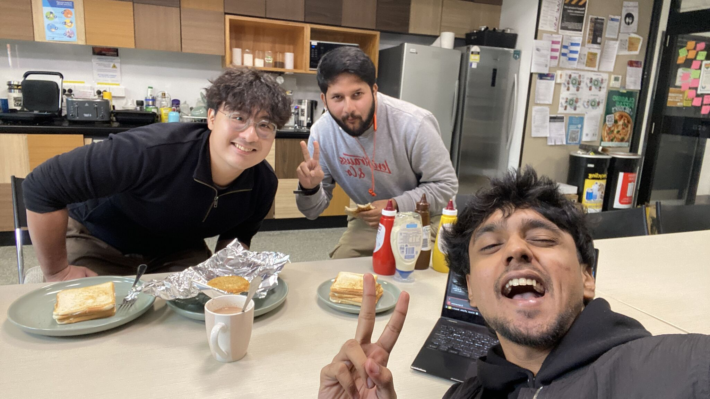

Forward Deployed GTM Engineer / Melbourne
Faheem Dehalvi
I build AI tools for business workflows and explain the decisions behind them.
- Study
- Master of Data Science, RMIT. Expected graduation June 2027
- Base
- Melbourne, Australia
- Topics
- Knowledge and context retrieval. API and MCP integrations. Workflow automation
01 / Selected projects
Projects
Tools for working with AI assistants, connecting applications and finding useful context.
FD CODE
Fork, customised
A customised T3 Code application with additions around Brain continuity, provider handoffs and ARTsie integration.
Built on T3 Code by its upstream authors.
ARTsie
Mac workspace and MCP gateway
A Mac workspace, hub and shared MCP gateway for the upstream ArtCraft apps.
Creative applications by ArtCraft; ARTsie provides the workspace and integration layer.
RAG skill
Claude Code integration
A Claude Code integration for RAG-Anything, LightRAG and MinerU.
Built with RAG-Anything, LightRAG and MinerU.
02 / Writing
Writing
Clear, practical guides: what a tool does, where it fails, and what to do next.
An illustrative invoice workflow explains how to define inputs, outputs, failure handling and checks before choosing an AI tool.
Forward Deployed GTM Engineer Faheem Dehalvi introduces his projects and practical writing on AI workflows, context and integrations.
03 / About
About
I'm a Forward Deployed GTM Engineer based in Melbourne, working part-time at Intelligent Resourcing while completing a Master of Data Science at RMIT. I expect to graduate in June 2027.
Outside work, I work on tools for connecting AI assistants, organising context and getting useful work done across applications. I write practical guides about the decisions behind those workflows: what information they need, how to check the output and what happens when a step fails.
The aim is simple: help you understand the options and decide what to do next.

04 / Contact
Elsewhere
Have a workflow you are trying to make sense of? Find me here.